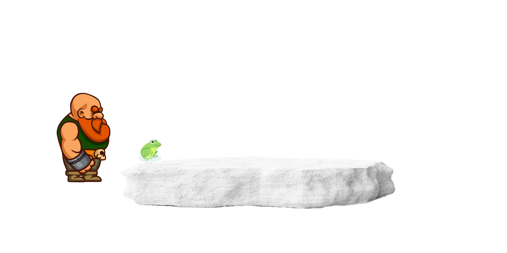

Мульти вычислители
Викинг и лягушка
Для запуска анимации выполните двойной клик по значку 
Для остановки анимации выполните одинарный клик по значку 

Вычисляет скорость кликов, за 30 - секундный интервал времени. Таймер обратного отсчета, запускается после нажатия кнопки "Click".
| Таймер | 30 | сек |
|---|---|---|
| Счетчик | 0 | клик |
| Результат | 0 | клик/сек |